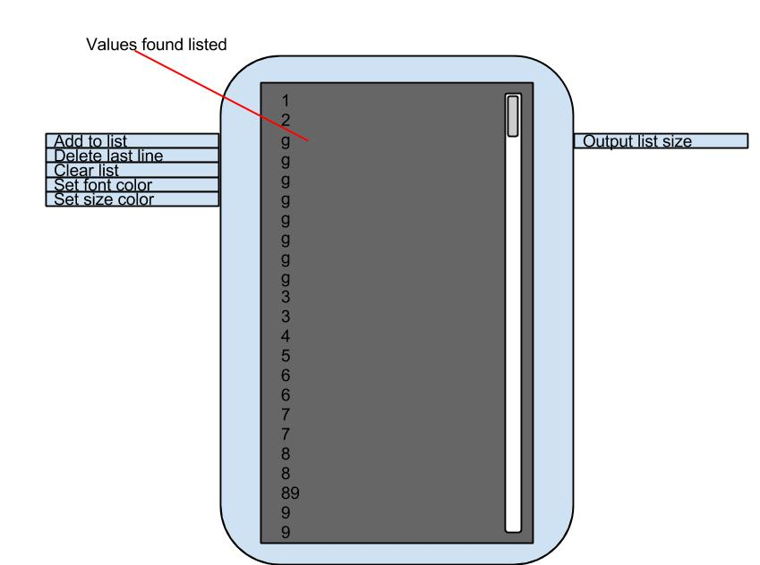

List Component:
This component listens to values coming into it and dumps it out in a list that looks and works exactly like the existing chat window expcept with the added benifet of manipulating the list by adding or deleting lines.
Listener Channel
- Add to list: Adds the input value to the list array
- Delete last input: looks for a signal to delete the last line created
- Clear list: looks for a signal to clear the entire list.
Output Channels:
- List size: Outputs the current list size as an integer
